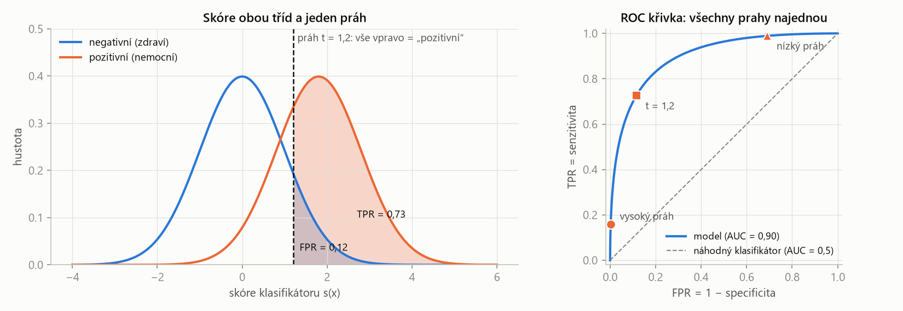
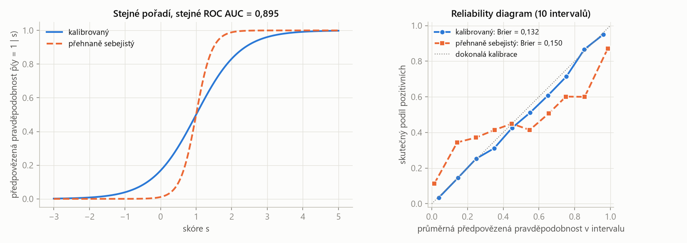
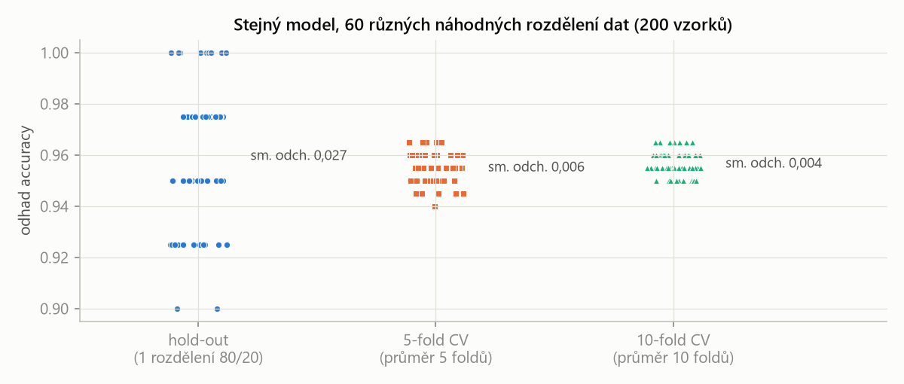
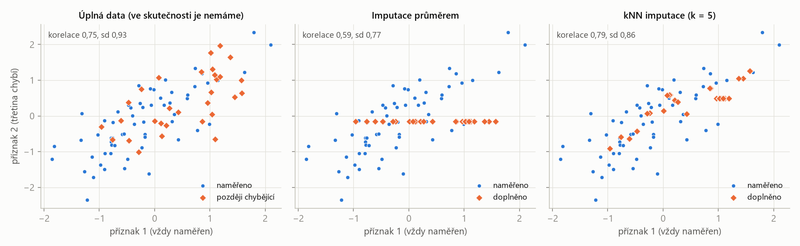
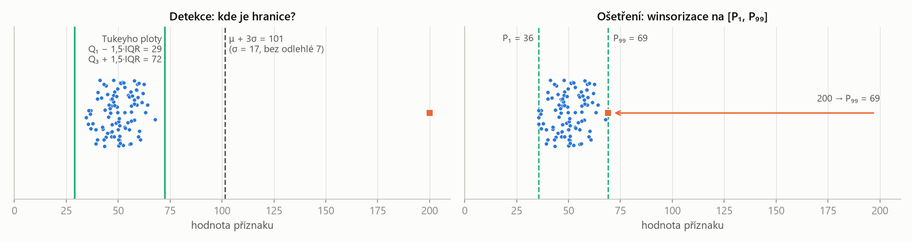

MLR – příprava na zkoušku · Hodnocení modelů a předzpracování – MLR · https://balnerm.github.io/pripravy/mlr/02_hodnoceni.html
Přednáška 2
Hodnocení modelů, metriky a předzpracování
Trénovací chybu umí stáhnout skoro k nule každý dost složitý model. Zajímá nás ale číslo, které model dosáhne na datech, která nikdy neviděl. Kapitola ukazuje, jak data rozdělit, čím úspěšnost měřit (a co která metrika skrývá), jak naložit s nevyváženými třídami a jak data předzpracovat, aby do hodnocení neprosákla informace z testu.
Cesta od dat k otestovanému modelu
- Definuj cíl – co chceme předpovídat?
- Rozděl data – trénovací / validační / testovací.
- Předzpracuj – vyčisti a připrav příznaky.
- Trénuj a laď – nauč modely, uprav nastavení.
- Vyhodnoť – výkon na validačních datech.
- Finální test – testovací data použij jednou pro realistický odhad.
Trénovací množina slouží k naučení parametrů modelu. Validační množina slouží k ladění hyperparametrů, výběru příznaků, porovnání modelů a hlídání přeučení. Testovací množina se odloží až na konec a použije se jednou – dává nestranný odhad výkonu na nových datech.
trénovací data jsou učebnice, validační zkušební test, na kterém si zkoušíš různé způsoby učení, a testovací data jsou ostrá zkouška, kterou nesmíš předem vidět. Kdo ladí na testu, „podvádí“ a dostane přehnaně optimistické číslo.
Populační (očekávané) riziko je očekávaná ztráta modelu na budoucích vzorcích ze skutečného (neznámého) rozdělení \(P\): \[ R(\theta) = \mathbb E_{(\mathbf x, y)\sim P}[L(f_\theta(\mathbf x), y)] \] Empirické riziko je průměrná ztráta na konečném vzorku dat, např. na trénovací množině: \[ \hat R_{\text{train}}(\theta) = \frac{1}{n}\sum_{i} L(f_\theta(\mathbf x_i), y_i) \]
Slovy: \(R(\theta)\) čti „jak velkou ztrátu bude model s parametry \(\theta\) dělat v průměru na všech budoucích datech“:
- \(\theta\) – parametry modelu (např. váhy), \(f_\theta(\mathbf x)\) – predikce modelu pro vstup \(\mathbf x\);
- \(L(f_\theta(\mathbf x), y)\) – ztráta jednoho vzorku: jak moc se predikce liší od správné odpovědi \(y\);
- \(\mathbb E_{(\mathbf x, y)\sim P}\) – průměr přes všechny dvojice (vstup, label), které mohou ze skutečného rozdělení \(P\) přijít, vážený tím, jak často přicházejí.
Rozdělení \(P\) neznáme, proto ho nahradíme vzorkem: \(\hat R\) (stříška = odhad) je obyčejný aritmetický průměr ztrát přes \(n\) vzorků, které máme. Na trénovacích datech je tento odhad přehnaně optimistický (model je viděl), na odložených testovacích nestranný – pokud testovací data pocházejí ze stejného rozdělení jako budoucí data.
trénujeme minimalizací empirického rizika na trénovacích datech, ale záleží nám na populačním riziku. Odhadujeme ho průměrnou ztrátou na odložené testovací množině: \(\hat R_{\text{test}} \approx R(\theta)\). Celý vývoj modelu je optimalizace zobecnění.
Vnitřní úloha – trénování (SGD, backpropagation…): parametry \(\theta\) se přizpůsobí trénovací množině:
\[ \theta^\ast = \arg\min_\theta \hat R_{\text{train}}(\theta) \]Vnější úloha – vývoj modelu: celá pipeline \(P\) (příznaky, předzpracování, model, hyperparametry) se hodnotí na validační množině:
\[ P^\ast = \arg\min_{P\in\mathcal H}\hat R_{\text{val}}(P) \]Test \(\hat R_{\text{test}}(P^\ast)\) – jednou, úplně na konci. Postup: trénuj → validuj → laď → opakuj; po výběru finálního modelu jednou test.
Slovy: \(\arg\min_\theta\) neznamená „nejmenší hodnota“, ale „ten \(\theta\), pro který je výraz nejmenší“ – výsledkem jsou nejlepší parametry \(\theta^\ast\) (hvězdička = optimální), ne nejmenší chyba. Vnitřní úloha: „najdi váhy, se kterými model na trénovacích datech chybuje nejméně.“ Vnější úloha: „z množiny \(\mathcal H\) všech pipeline, které zkoušíme (různé příznaky, modely, hyperparametry), vyber tu s nejmenší chybou na validaci.“ Každý krok vnější úlohy v sobě obsahuje jedno celé trénování. Písmeno \(P\) tu značí pipeline, ne rozdělení dat z definice rizika – slidy používají stejné písmeno.
Ztrátová funkce (loss) je číslo, které při trénování minimalizuje optimalizátor v každém kroku; musí být diferencovatelná a počítá se po vzorcích (křížová entropie, MSE, hinge). Metrika je číslo, kterým výsledek hodnotíme my na validačních/testovacích datech a které vyjadřuje, na čem úloze záleží (accuracy, F1, AUC, Dice, MAE).
accuracy je vzhledem k výstupu modelu schodová funkce (gradient je skoro všude nula) a F1 nebo AUC se počítají z celé množiny, ne po vzorcích – proto trénujeme na hladké náhražce a reportujeme metriku. Někdy splývají (MSE u regrese). Bez ztrátové funkce by počítač nevěděl, který model je lepší.
Metriky
Ke každé metrice si polož otázku: co měří – a co skrývá?
Accuracy a regresní chyby
| \(e_i = \hat y_i - y_i\) | chyba (reziduum) \(i\)-té predikce |
| MSE | průměr čtverců chyb = \(\frac1n\|\mathbf e\|_2^2\); velké chyby trestá výrazně víc |
| MAE | průměr absolutních chyb = \(\frac1n\|\mathbf e\|_1\); robustnější k odlehlým hodnotám |
| RMSE | odmocnina z MSE – má stejné jednotky jako \(y\) |
| \(p\) v \(\frac1n\|\mathbf e\|_p^p\) | obecně: \(p\) určuje, jak drahá je velká chyba |
Chybovost (error rate) = 1 − accuracy.
Slovy:
- Accuracy – podíl správně zařazených vzorků; \(\#\{\hat y_i = y_i\}\) je počet vzorků, u kterých se predikce shoduje se skutečností (\(\#\) = „počet“).
- MSE – u každého vzorku spočítej chybu, umocni ji na druhou (zmizí znaménko a velké chyby narostou) a zprůměruj.
- MAE – totéž s absolutní hodnotou: každá jednotka chyby stojí stejně.
- RMSE – odmocnina vrátí MSE do jednotek \(y\): MSE výšky vychází v cm², RMSE zase v cm.
Obecný zápis přes normu vektoru chyb \(\mathbf e\):
\[ \|\mathbf e\|_p = \Big(\sum_i |e_i|^p\Big)^{1/p} \]Výraz \(\frac1n\|\mathbf e\|_p^p\) je tedy průměr \(|e_i|^p\): \(p = 2\) dává MSE, \(p = 1\) MAE. Čím větší \(p\), tím dražší velká chyba – chyba 2 je oproti chybě 1 v MAE 2× dražší, v MSE 4× (\(2^2 = 4\)).
Klasifikace: \(\mathbf y = [1, 0, 1, 2, 0]\), \(\hat{\mathbf y} = [1, 1, 1, 0, 0]\) ⇒ accuracy = 3/5 = 0,6.
Regrese – skutečné a předpovězené hodnoty a chyby \(e_i = \hat y_i - y_i\):
\[ \begin{aligned} \mathbf y &= [3;\ -0{,}5;\ 2;\ 7;\ 4{,}2] \\ \hat{\mathbf y} &= [2{,}5;\ 0;\ 2{,}1;\ 7{,}8;\ 3{,}5] \\ \mathbf e &= [-0{,}5;\ 0{,}5;\ 0{,}1;\ 0{,}8;\ -0{,}7] \end{aligned} \]1. Součet čtverců a součet absolutních hodnot chyb:
\[ \begin{aligned} \textstyle\sum_i e_i^2 &= 0{,}25 + 0{,}25 + 0{,}01 + 0{,}64 + 0{,}49 \\ &= 1{,}64 \\ \textstyle\sum_i |e_i| &= 0{,}5 + 0{,}5 + 0{,}1 + 0{,}8 + 0{,}7 \\ &= 2{,}6 \end{aligned} \]2. Metriky (dělíme počtem vzorků \(n = 5\)):
\[ \begin{aligned} \text{MSE} &= 1{,}64/5 = 0{,}328 \\ \text{MAE} &= 2{,}6/5 = 0{,}52 \\ \text{RMSE} &= \sqrt{0{,}328} = 0{,}573 \end{aligned} \]3. Pro \(R^2\) (definice níže) potřebujeme průměr \(\bar y\) a celkový součet čtverců SST:
\[ \begin{aligned} \bar y &= 15{,}7/5 = 3{,}14 \\ \text{SST} &= \textstyle\sum_i (y_i - \bar y)^2 = 30{,}59 \\ R^2 &= 1 - 1{,}64/30{,}59 = 0{,}946 \end{aligned} \]Matice záměn a metriky z ní
Matice záměn je tabulka počtů, která pro binární klasifikaci křížově třídí skutečnou a předpovězenou třídu: TP (skutečně pozitivní, předpovězeno pozitivní), FN (pozitivní, předpovězeno negativní – chyba II. druhu), FP (negativní, předpovězeno pozitivní – chyba I. druhu) a TN (negativní, předpovězeno negativní).
přehled, kde přesně se model plete. Všechny běžné klasifikační metriky jsou poměry čísel z této tabulky.
| předpověď pozitivní | předpověď negativní | metrika řádku | |
|---|---|---|---|
| skutečně pozitivní | TP | FN (chyba II. druhu) | senzitivita = recall = TPR = TP/(TP+FN) |
| skutečně negativní | FP (chyba I. druhu) | TN | specificita = TN/(TN+FP) |
| metrika sloupce | přesnost (precision, PPV) = TP/(TP+FP) | NPV = TN/(TN+FN) | accuracy = (TP+TN)/vše |
Senzitivita (recall, TPR) je podíl skutečně pozitivních vzorků, které model označil jako pozitivní. Přesnost (precision, PPV) je podíl vzorků označených jako pozitivní, které jsou opravdu pozitivní. Specificita je podíl skutečně negativních označených jako negativní: \[ \text{recall} = \frac{TP}{TP + FN} \] \[ \text{precision} = \frac{TP}{TP + FP} \] \[ \text{specificita} = \frac{TN}{TN + FP} \]
Slovy: v čitateli jsou vždy správné zásahy, jmenovatel říká, z koho podíl počítám. U recall a specificity je to celý řádek matice záměn (všichni skutečně nemocní, resp. všichni zdraví), u precision celý sloupec (všichni, komu model řekl „nemocný“). Recall a precision se liší jediným členem ve jmenovateli: recall trestá přehlédnuté (FN), precision falešné poplachy (FP).
recall: „kolik nemocných jsem našel?“; precision: „když řeknu nemocný, kolikrát mám pravdu?“; specificita: „kolik zdravých jsem nechal na pokoji?“ Žádná z nich sama nestačí – model, který řekne každému „pozitivní“, má senzitivitu 1.
F1 skóre je harmonický průměr přesnosti a senzitivity: \[ \begin{aligned} F_1 &= 2\cdot\frac{\text{precision}\cdot\text{recall}}{\text{precision} + \text{recall}} \\ &= \frac{2TP}{2TP + FP + FN} \end{aligned} \] Je totožné s Diceovým koeficientem množiny předpovězených a skutečných pozitiv: \[ \text{Dice} = \frac{2|X\cap Y|}{|X| + |Y|} \]
Slovy: harmonický průměr dvou čísel leží vždy blíž k menšímu z nich, takže F1 nejde „ošidit“ jednou vysokou hodnotou: precision 1,0 a recall 0,1 dají aritmetický průměr 0,55, ale \(F_1 = 0{,}18\). Pravý tvar vzorce porovnává správné zásahy se všemi chybami – FP i FN se počítají stejně, správně negativní (TN) vůbec. U Diceova koeficientu je \(X\) množina vzorků (v segmentaci pixelů), které model označil jako pozitivní, \(Y\) množina skutečně pozitivních a jejich průnik \(X\cap Y\) jsou právě TP; \(|X| = TP + FP\) a \(|Y| = TP + FN\).
jedno číslo, které je vysoké jen tehdy, když model zároveň málo přehlíží i málo plaše poplašuje. Nezávisí na TN, proto je užitečné, když je pozitivních vzorků málo.
10 vzorků: TP = 4, FP = 2, FN = 1, TN = 3.
\[ \begin{aligned} \text{precision} &= 4/6 = 0{,}67 \\ \text{recall} &= 4/5 = 0{,}80 \\ F_1 &= \frac{2\cdot4}{2\cdot4 + 2 + 1} = \frac{8}{11} = 0{,}73 \\ \text{accuracy} &= (4 + 3)/10 = 0{,}7 \end{aligned} \]Model „vždy pozitivní“ (TP = 5, FP = 5, FN = 0): recall 1,0, ale
\[ F_1 = \frac{2\cdot5}{2\cdot5 + 5 + 0} = \frac{10}{15} = 0{,}67 \]ROC křivka, AUC a volba prahu
Většina klasifikátorů vrací skóre (míru jistoty) a o třídě rozhoduje až práh. Co je skóre: u logistické regrese a sítí výstup sigmoidy/softmaxu, u random forestu podíl stromů hlasujících pro třídu, u k-NN podíl \(k\) sousedů, u SVM znaménková vzdálenost od nadroviny, u naivního Bayese aposteriorní pravděpodobnost. Někdy je práh součástí modelu (SVM).
ROC křivka (receiver operating characteristic) je křivka bodů \((\text{FPR}, \text{TPR})\), které dostaneme, když postupně posouváme rozhodovací práh přes všechny hodnoty skóre: \[ \text{TPR} = \frac{TP}{TP+FN} \] \[ \text{FPR} = \frac{FP}{FP+TN} = 1 - \text{specificita} \]
Slovy: TPR je podíl pozitivních vzorků, jejichž skóre je nad prahem (kolik nemocných zachytím); FPR je podíl negativních vzorků nad prahem (kolik zdravých falešně poplaším). Na obr. 2.1 jsou to vybarvené plochy napravo od prahu. Každý z obou podílů se počítá jen v rámci své třídy, proto ROC křivka nezávisí na tom, kolik je v datech pozitivních (na prevalenci).
celý klasifikátor v jednom obrázku: každý práh je jeden bod, volba prahu jen vybírá bod na křivce. Vysoký práh ⇒ skoro nic není pozitivní, bod (0, 0); nízký práh ⇒ vše pozitivní, (1, 1). Dokonalý klasifikátor se dotkne (0, 1), náhodný leží na diagonále.
- Spočítej skóre \(s_i\) všech vzorků.
- Seřaď unikátní hodnoty skóre a použij je jako prahy.
- Pro každý práh binarizuj predikce a spočítej TPR a FPR.
- Vynes body (FPR, TPR) a spoj je.
ROC AUC je plocha pod ROC křivkou: \[ \text{AUC} = \int_0^1 \text{TPR}\,d(\text{FPR}) \] Rovná se pravděpodobnosti, že náhodně vybraný pozitivní vzorek dostane vyšší skóre než náhodně vybraný negativní: \[ \text{AUC} = P\big(s(\mathbf x^+) \gt s(\mathbf x^-)\big) \]
Slovy: integrál je jen zápis plochy – sčítá výšku křivky (TPR) přes všechny hodnoty FPR od 0 do 1. Druhý zápis jde spočítat ručně: \(\mathbf x^+\) je náhodný pozitivní vzorek, \(\mathbf x^-\) náhodný negativní a \(s(\cdot)\) skóre modelu. Vezmi všechny dvojice (jeden pozitivní, jeden negativní) a spočítej, v jakém podílu z nich má pozitivní vyšší skóre.
jak dobře model seřadí pozitivní nad negativní, nezávisle na prahu. 0,5 = náhoda, 1 = dokonalé seřazení. AUC ale neříká nic o tom, jestli jsou skóre dobré pravděpodobnosti (kalibrace).
Skóre tří pozitivních vzorků: 0,9; 0,7; 0,4. Skóre tří negativních: 0,6; 0,3; 0,2. Dvojic pozitivní–negativní je 3 · 3 = 9.
- Pozitivní 0,9 a 0,7 mají vyšší skóre než všechny tři negativní: 3 + 3 = 6 dvojic.
- Pozitivní 0,4 je nad 0,3 a 0,2, ale pod 0,6: 2 dvojice.
- Správně seřazených dvojic je 8 z 9:
Stejné číslo vyjde jako plocha pod ROC křivkou těchto šesti vzorků. Kdyby všechny pozitivní ležely nad všemi negativními, bylo by AUC = 1 – pro práh mezi nimi by model nechyboval vůbec.

Posun prahu doprava sníží FPR (méně falešných poplachů) i TPR (víc přehlédnutých) – je to vždy kompromis. Celá křivka je jeden klasifikátor; tvar křivky (a AUC) určuje, jak moc se rozdělení skóre obou tříd překrývají. Lepší model = méně překryvu = křivka blíž k levému hornímu rohu.
Výchozí práh 0,5 na pravděpodobnosti je zvyk, ne pravidlo.
- Maximální accuracy (FP a FN stejně drahé): \(t = 2{,}54\), accuracy 0,956 – ale najde jen 23 % pozitivních.
- Youdenův index \(J = \text{TPR} - \text{FPR}\) (bod nejdál od diagonály): \(t = 0{,}90\), senzitivita = specificita = 0,82. Slovy: \(J\) je svislá vzdálenost bodu ROC od diagonály – na diagonále je TPR = FPR, tedy \(J = 0\) (náhoda), v dokonalém bodě (0, 1) je \(J = 1\).
- Požadovaná senzitivita (screening: přehlédnout nejvýš 5 %): \(t = 0{,}16\), zaplaceno FPR = 0,44.
Práh se volí na validačních datech, nikdy na testu.
| parametr | co znamená | ↑ když ho zvětším | ↓ když ho zmenším |
|---|---|---|---|
| práh \(t\) | od jakého skóre říkám „pozitivní“ | méně pozitivních predikcí: FPR ↓, specificita ↑, precision obvykle ↑, ale recall (TPR) ↓ – víc přehlédnutých | víc pozitivních predikcí: recall ↑, ale FPR ↑ a precision ↓ – víc falešných poplachů |
podle cen chyb: screening → vysoká senzitivita; potvrzující test → vysoká specificita; bez preferencí Youdenův index. Na ROC ani AUC práh nemá vliv – mění jen bod na křivce.
Klasifikátor je kalibrovaný, pokud jeho výstup lze číst jako pravděpodobnost: mezi vzorky s \(\hat p = 0{,}8\) je asi 80 % pozitivních (kontroluje se po intervalech v reliability diagramu). Brierovo skóre je MSE pravděpodobností a kalibraci zachytí: \[ \text{Brier} = \frac1n\sum_i(\hat p_i - y_i)^2 \]
Slovy: \(\hat p_i\) je předpovězená pravděpodobnost pozitivní třídy, \(y_i\) skutečný label (1 = pozitivní, 0 = negativní). U každého vzorku se změří, jak daleko byla předpověď od skutečnosti, umocní se to a zprůměruje – stejně jako u MSE. Předpověď \(\hat p = 0{,}8\) stojí:
\[ \begin{aligned} y = 1&:\ (0{,}8 - 1)^2 = 0{,}04 \\ y = 0&:\ (0{,}8 - 0)^2 = 0{,}64 \end{aligned} \]Sebejistý omyl je tedy drahý, a proto Brier kalibraci vidí; 0 = dokonalé, nižší je lepší.
monotónní transformace skóre zachová pořadí, ROC i AUC – a přitom může zničit pravděpodobnosti. AUC kalibraci nevidí; Brier ano (v přednášce 0,133 vs. 0,153 pro stejné AUC).

Obě křivky vlevo jsou rostoucí funkce téhož skóre, takže vzorky seřadí úplně stejně – ROC křivka i AUC jsou totožné. Liší se jen tím, jaké číslo vypíšou: přehnaně sebejistý model hlásí 0,05 nebo 0,95 i tam, kde je skutečnost nejistá. Reliability diagram (vpravo) rozdělí vzorky do 10 intervalů podle předpovězené pravděpodobnosti a v každém porovná průměrnou předpověď se skutečným podílem pozitivních. Kalibrovaný model leží na diagonále. Sebejistý se od ní odchyluje: v nízkých intervalech je pozitivních víc, než slibuje, ve vysokých méně. AUC tento rozdíl nevidí, Brierovo skóre ano (0,132 vs. 0,150; v přednášce 0,133 vs. 0,153).
Koeficient determinace udává, o kolik je model lepší než predikce průměrem: \[ R^2 = 1 - \frac{\sum_i(y_i - \hat y_i)^2}{\sum_i(y_i - \bar y)^2} = 1 - \frac{\text{SSE}}{\text{SST}} \] \[ R^2 \in (-\infty, 1] \]
Slovy: SST (jmenovatel) je chyba „hloupého“ modelu, který vždy předpoví průměr \(\bar y\); SSE (čitatel) je chyba našeho modelu. Jejich podíl říká, jaká část rozptylu \(y\) zůstala modelem nevysvětlená, a \(R^2\) je zbytek, tedy vysvětlená část. V regresním příkladu výše je podíl 1,64/30,59 = 0,054: model nevysvětlil 5,4 % rozptylu, \(R^2 = 0{,}946\). Záporné \(R^2\) vyjde, když SSE > SST – model chybuje víc než pouhý průměr (typicky přeučený model na testovacích datech).
1 = dokonalá shoda, 0 = model není lepší než „vždy průměr“, záporné = je ještě horší. Čitatel je součet čtverců reziduí (SSE), jmenovatel celkový součet čtverců (SST).
Více tříd a více labelů
Multiclass (jeden label): každý vzorek patří právě do jedné z \(K\) tříd, \(y \in \{1,\dots,K\}\) nebo one-hot vektor se součtem 1 (typ nádoru na MRI, stupeň diabetické retinopatie). Multilabel: vzorek může mít žádný, jeden i více labelů současně, \(\mathbf y \in \{0,1\}^K\) (multi-hot; tagy obrázku, komorbidity pacienta).
multiclass = „vyber jednu odpověď“, multilabel = „zaškrtni všechny, které platí“.
Micro: nejdřív se sečtou TP, FP, FN přes všechny třídy a z nich se spočítá jedna globální hodnota (u jednolabelového multiclass je micro-F1 = accuracy). Macro: metrika se spočítá pro každou třídu zvlášť a výsledky se prostě zprůměrují. Weighted macro: jako macro, ale průměr je vážený počtem vzorků třídy (support).
micro = „jak se daří na jednotlivých vzorcích“ (dominují časté třídy); macro = „každá třída má stejný hlas“ (zvýrazní špatný výkon na vzácných třídách, u malých tříd je hlučné); weighted = kompromis, rozumná výchozí volba při nevyváženosti.
| \(K\) | počet tříd |
| \(F_{1,k}\) | F1 třídy \(k\), počítané „tato třída proti všem ostatním“ |
| \(n_k\), \(n\) | počet vzorků třídy \(k\) (support) a počet všech vzorků |
| \(TP_k, FP_k, FN_k\) | počty z matice záměn pro třídu \(k\) |
Slovy: macro je prostý průměr F1 přes třídy – každá třída má váhu \(1/K\), ať je velká, nebo malá. Weighted dá každé třídě váhu podle jejího podílu v datech \(n_k/n\). Micro nejdřív sečte zásahy a chyby všech tříd dohromady a F1 spočítá až z celkových součtů – výsledek tak určují hlavně početné třídy. U jednolabelové klasifikace je každá chyba zároveň FP jedné třídy a FN jiné, proto micro-F1 vyjde rovno accuracy.
Třída A má 90 vzorků, B 8, C 2. Matice záměn (řádky = skutečnost, sloupce = predikce A, B, C): A [85, 3, 2], B [2, 5, 1], C [1, 0, 1].
1. F1 po třídách: TP leží na diagonále, FP je zbytek sloupce, FN zbytek řádku. Pro třídu C je TP = 1, FP = 2 + 1 = 3, FN = 1 + 0 = 1:
\[ F_{1,C} = \frac{2\cdot1}{2\cdot1 + 3 + 1} = \frac{2}{6} = 0{,}333 \]Stejně vyjde A (TP 85, FP 3, FN 5): 0,955 a B (TP 5, FP 3, FN 3): 0,625.
2. Průměry:
- micro-F1 = accuracy = 91/100 = 0,91;
- weighted-F1 = 0,90 · 0,955 + 0,08 · 0,625 + 0,02 · 0,333 = 0,916 (dominuje A s váhou 0,90);
- macro-F1 = (0,955 + 0,625 + 0,333)/3 = 0,638 – jediné číslo, které ukáže, že na C model skoro nefunguje.
Model „vždy A“ má accuracy 0,90, ale macro-F1 jen 0,316.
Pro multilabel: subset accuracy (exact match – všechny labely musí sedět), Hamming loss (podíl chybných labelů, nižší je lepší) a micro/macro F1 přes labely.
Nevyvážené třídy
Data mají nevyvážené třídy, když je jedna třída mnohem vzácnější než ostatní (např. pozitivních je méně než 5 %). Paradox accuracy: model, který minoritní třídu úplně ignoruje, má přesto vysokou accuracy.
když je pozitivních 1 %, model, který nikdy nic nenajde, má accuracy 99 % – a je k ničemu.
- Hodnoť správně: macro/weighted F1, normalizovaná matice záměn, uváděj prevalenci.
- Trénuj s ohledem na nevyváženost: váhy tříd / cost-sensitive ztráta, nebo převzorkování.
| oversampling (zvětšit minoritu) | undersampling (zmenšit majoritu) | |
|---|---|---|
| metody | náhodné duplikování; SMOTE, ADASYN – syntetické body mezi sousedy minority; augmentace (otočení, šum – „SMOTE pro obrazy a signály“) | náhodné vyřazení; čisticí pravidla Tomek links, ENN, NearMiss, ClusterCentroids |
| výhody | zachová všechna data majority, zvýší recall | rychlejší, může odstranit šum na hranici |
| nevýhody | přeučení (duplikáty), artefakty (syntetické body) | zahodí informaci, riziko podučení |
| kdy | velmi malá minorita | obrovská majorita, drahé trénování |
Jakékoli převzorkování jen na trénovacích datech, uvnitř každého foldu CV – nikdy na validačních ani testovacích (jinak hodnotíš na umělých bodech). Totéž platí pro předzpracování (škálování, PCA): fit jen na trénovacích datech, hodnoty z nich se použijí na validaci/test.
Stratifikované rozdělení zachovává podíly tříd stejné v trénovací, validační i testovací množině a v každém foldu. Skupinové (group-aware) rozdělení dává všechna data jedné skupiny (pacient, přístroj, pracoviště) do stejné části.
když od jednoho pacienta máme víc signálů, musí být všechny buď v tréninku, nebo v testu. Jinak se model „naučí pacienta“, signály téhož pacienta jsou silně korelované a výsledek je přehnaně optimistický (únik informace).
Validační přístupy
k-fold křížová validace rozdělí data na \(k\) přibližně stejných částí (foldů) a provede \(k\) kol: v každém se model trénuje na \(k-1\) foldech a validuje na zbývajícím. Výsledkem je průměr ± směrodatná odchylka metriky přes foldy. Pro \(k = n\) jde o leave-one-out (LOO).
každý vzorek se jednou stane validačním a \(k-1\)-krát trénovacím, takže využijeme všechna data a dostaneme i představu o rozptylu odhadu. Testovací množina zůstává netknutá; škálování a převzorkování se dělá uvnitř každého foldu. U malých dat lze CV použít i místo testu.
Modře trénovací foldy, oranžově validační fold daného kola.
Hold-out validace rozdělí data jednou na trénovací, validační a testovací část (např. 70/15/15 nebo 60/20/20): trénuje se na trénovací, hyperparametry a prahy se ladí na validační a finální výkon se změří jednou na testovací.
jednoduché a rychlé (jeden fit na nastavení), dobré pro velká data a snadno udrží čistý test. Nevýhoda: odhad má vysoký rozptyl – závisí na tom, jak „šťastně“ padlo rozdělení – a u malých dat plýtvá vzorky, které by pomohly trénování.

Jedno rozdělení dává jedno číslo – a to číslo hodně závisí na štěstí (hold-out kolísá mezi 0,90 a 1,00, sd 0,027). Průměr přes foldy CV je mnohem stabilnější (sd 0,006 a 0,004). Otázka „kolik z čísla je model a kolik štěstí rozdělení“ je přesně důvod pro křížovou validaci.
| parametr | co znamená | ↑ když ho zvětším | ↓ když ho zmenším |
|---|---|---|---|
| počet foldů \(k\) | na kolik částí data dělím | víc fitů (výpočet ↑), každý fit má víc trénovacích dat (\(n(k-1)/k\)) ⇒ méně pesimistický odhad; \(k = n\) je LOO | méně výpočtu, ale méně trénovacích dat na fit (odhad pesimističtější) a méně foldů k průměrování |
| velikost testovací / validační části | kolik dat odložím | přesnější odhad výkonu, ale méně dat na trénování | víc dat na trénování, ale hlučný odhad |
| stratifikace / skupiny | zachovat podíly tříd, nedělit skupiny | zapnout vždy, když jsou třídy nevyvážené nebo když data mají skupiny (pacienty); jinak hrozí zkreslený nebo přehnaně optimistický odhad | |
typicky \(k = 5\) nebo 10; hold-out 70/15/15 u velkých dat.
Předzpracování bez úniku informace
Únik informace nastane, když se do učení modelu (včetně předzpracování, výběru příznaků či ladění) dostane informace z dat, na kterých má být model teprve hodnocen, nebo informace, kterou by model v reálném nasazení neměl k dispozici.
model „opisuje z řešení“ a na testu vypadá lépe, než ve skutečnosti je. Typické případy: průměr pro standardizaci spočítaný z celých dat, převzorkování před rozdělením, signály jednoho pacienta v tréninku i testu, výběr příznaků na celém datasetu. Model vidí jen předzpracovaná data – a právě tam vzniká většina úniků.
Typické kroky: čištění (chybějící hodnoty, odlehlé hodnoty, nekonzistentní kategorie), škálování, kódování kategorií, redukce dimenze. Vše implementuj uvnitř Pipeline a hodnoť křížovou validací – pak se fit předzpracování automaticky děje jen na trénovacích foldech.
Škálování
- standardizace: \[ x' = \frac{x - \mu_{\text{train}}}{\sigma_{\text{train}}} \]
- robustní škálování: \[ x' = \frac{x - \text{med}_{\text{train}}}{\text{IQR}_{\text{train}}} \]
- min–max: \[ x' = \frac{x - \min_{\text{train}}}{\max_{\text{train}} - \min_{\text{train}}} \]
- percentilové min–max: \[ x' = \operatorname{clip}\!\left(\frac{x - P_{1}}{P_{99} - P_{1}},\ 0,\ 1\right) \]
| \(x\), \(x'\) | původní a přeškálovaná hodnota příznaku |
| \(\mu_{\text{train}}, \sigma_{\text{train}}\) | průměr a směrodatná odchylka příznaku na trénovacích datech |
| \(\text{med}_{\text{train}}\), \(\text{IQR}_{\text{train}}\) | medián a mezikvartilové rozpětí \(Q_3 - Q_1\) (šířka prostředních 50 % hodnot) |
| \(\min_{\text{train}}, \max_{\text{train}}\) | nejmenší a největší trénovací hodnota |
| \(P_1, P_{99}\) | 1. a 99. percentil trénovacích hodnot (pod \(P_1\) leží 1 % hodnot) |
| \(\operatorname{clip}(z, 0, 1)\) | oříznutí: co je pod 0, nastaví na 0, co je nad 1, na 1 |
| standardizace (z-skóre) | průměr 0, sd 1, zachová tvar rozdělení; výchozí pro lineární modely, SVM, PCA, sítě |
| robustní | medián a mezikvartilové rozpětí místo \(\mu, \sigma\) – odlehlé hodnoty měřítko neposunou |
| min–max | přesně [0, 1]; pro omezené vstupy (obrazy, sigmoidy); jedna odlehlá hodnota „zmáčkne“ všechno ostatní |
| percentilové min–max | omezené a robustní: extrémy se oříznou na 1. a 99. percentil |
Slovy: všechny čtyři vzorce mají tvar „(hodnota − střed) / šířka“: od hodnoty odečtou typickou hodnotu a vydělí ji typickým rozpětím, takže příznaky v cm, mg/l nebo letech dostanou srovnatelné měřítko. Standardizace říká, o kolik směrodatných odchylek je hodnota nad průměrem: při \(\mu = 170\) cm a \(\sigma = 10\) cm má výška 180 cm hodnotu \(x' = (180 - 170)/10 = 1\). Robustní škálování měří totéž v mediánech a IQR, min–max jako podíl cesty od minima k maximu (0 = minimum, 1 = maximum).
Stromy škálování obvykle nepotřebují; lineární modely, SVM, k-NN a logistická regrese ano.
Chybějící hodnoty (imputace)
Imputace je nahrazení chybějící hodnoty odhadem – statistikou sloupce (průměr, medián, nejčastější hodnota) nebo hodnotou odvozenou z ostatních příznaků (kNN imputer, iterativní MICE).
díru zalepíme „nejrozumnějším tipem“. Tip je ale vymyšlený, ne naměřený: jedna hodnota pro celý sloupec ho „zploští“ (v přednášce sd 0,96 → 0,77) a oslabí vztahy (korelace 0,73 → 0,59). kNN a MICE sledují trend (korelace 0,79), jen trochu příliš hladce.

Vlevo jsou úplná data, jaká bychom měli bez chybění (oranžově hodnoty, které později chybí – častěji u vyšších hodnot příznaku 1). Imputace průměrem dá všem chybějícím stejné číslo, oranžové body leží na vodorovné čáře. Sloupec se „zploští“, protože doplněné body leží přesně na průměru a ke směrodatné odchylce nic nepřidají (sd 0,93 → 0,77), a vztah k příznaku 1 zeslábne (korelace 0,75 → 0,59). kNN imputace vezme průměr příznaku 2 u 5 řádků nejpodobnějších v příznaku 1, takže doplněné body sledují trend (korelace 0,79). Leží ale až příliš „na přímce“, bez přirozeného rozptylu – vztah tak mírně nadhodnotí.
- Indikátor chybění – sloupec 0/1 „chybělo“: často nejinformativnější příznak (nevyšetřeno = lékař neviděl důvod).
- Vyřazení řádků – jen když je jich málo a chybí náhodně.
- Všechny statistiky se počítají z trénovacích řádků; validační a testovací řádky dostanou stejná čísla.
Výška (cm) osmi studentů: 172, –, 165, 180, 400, 168, –, 175. Průměr šesti známých hodnot je 210,0 – hodnota 400 (zjevná chyba) se tak „zkopíruje“ do dalších dvou řádků. Medián 173,5 ji ignoruje. U skóre testu (68, 74, –, 91, 55, 62, 80, –) znamená doplnění 0 „nešel na test“, průměr 71,7 „průměrný student“ – ani jedno není neutrální; fakt chybění zachová indikátorový sloupec.
Odlehlé hodnoty
Tukeyho ploty označí hodnotu za odlehlou, pokud leží mimo interval \[ \big[\,Q_1 - 1{,}5\,\text{IQR},\ \ Q_3 + 1{,}5\,\text{IQR}\,\big] \] kde \(Q_1, Q_3\) jsou kvartily a IQR = \(Q_3 - Q_1\). Winsorizace je oříznutí extrémních hodnot na zvolenou mez (např. percentil nebo plot) – hodnota zůstane v datech, ale ztratí svůj nepřiměřený vliv.
Slovy: \(Q_1\) a \(Q_3\) jsou hodnoty, pod kterými leží 25 %, resp. 75 % dat; mezi nimi je „prostřední polovina“ široká IQR. Ploty stojí 1,5 této šířky pod \(Q_1\) a nad \(Q_3\) – co leží dál, je podezřelé. z-skóre \(z = (x - \mu)/\sigma\) naopak měří vzdálenost od průměru v jednotkách \(\sigma\), a průměr i \(\sigma\) odlehlá hodnota sama posune.
kvartily se odlehlou hodnotou nepohnou, proto jsou ploty robustní. Pravidlo \(|z| \gt 3\) naopak selhává, protože odlehlá hodnota sama nafoukne \(\sigma\) (maskování).
Výšky 172, 165, 180, 400, 168, 175, 161, 177 (\(n = 8\)).
1. z-skóre hodnoty 400:
\[ \begin{aligned} \mu &= 1598/8 = 199{,}8 \\ \sigma &= 75{,}9 \\ z_{400} &= (400 - 199{,}8)/75{,}9 = 2{,}64 \end{aligned} \]Bez hodnoty 400 by bylo \(\sigma = 6{,}3\). Pravidlo \(|z| \gt 3\) hodnotu 400 nezachytí. V osmi hodnotách navíc žádné \(|z|\) ani nemůže hranice 3 dosáhnout – největší možné z-skóre je
\[ \sqrt{n-1} = \sqrt7 \approx 2{,}65 \]Slovy: ať je odlehlá hodnota jakkoli velká, sama si \(\sigma\) nafoukne tak, že její z-skóre zůstane pod \(\sqrt{n-1}\).
2. Tukeyho ploty:
\[ \begin{aligned} Q_1 &= 167{,}25 \\ Q_3 &= 177{,}75 \\ \text{IQR} &= 177{,}75 - 167{,}25 = 10{,}5 \\ Q_3 + 1{,}5\cdot\text{IQR} &= 177{,}75 + 15{,}75 = 193{,}5 \end{aligned} \]400 > 193,5, tedy 400 je odlehlá.
3. Ošetření: pokud by hodnota byla věrohodná, winsorizujeme ji na 193,5; 400 cm je ale nemožné, tedy ji odstraníme (uvnitř trénovacího foldu).

Vlevo: 99 běžných hodnot kolem 50 a jedna odlehlá (200). Ta sama nafoukne \(\sigma\) ze 7 na 17, takže hranice \(\mu + 3\sigma\) uteče až na 101 – hodnoty mezi 72 a 101 by pravidlo 3σ přehlédlo (maskování). Tukeyho ploty (29 a 72) stojí na kvartilech, které se odlehlou hodnotou skoro nepohnou, a hodnotu 200 zachytí. Vpravo winsorizace: všechno pod \(P_1\) a nad \(P_{99}\) se ořízne na tyto meze. Hodnota 200 v datech zůstane, ale jako 69, takže už netáhne průměr ani směrodatnou odchylku. V přednášce vycházejí skoro stejná čísla (σ 17 místo 7, \(\mu + 3\sigma = 102\), plot 71, winsorizace 200 → 71).
- Nejbezpečnější výchozí volba: hodnotu ponechat a použít robustní škálování – odlehlá hodnota nemusí být chyba, může to být ten zajímavý pacient.
- Ve více rozměrech: isolation forest, local outlier factor.
- Odstraňovat jen nemožné hodnoty, a to uvnitř trénovacího foldu s pravidlem nafitovaným tam.
Kódování kategorií
One-hot vytvoří pro každou úroveň kategorie jeden sloupec 0/1. Ordinální kód převede úrovně na jedno celé číslo. Target encoding nahradí úroveň průměrem cílové proměnné \(y\) pro tuto úroveň.
one-hot je výchozí pro nominální kategorie (u lineárních modelů jeden sloupec vypusť – sloupce dávají součet 1; vzácné úrovně slouč do „ostatní“). Ordinální kód jen tam, kde pořadí opravdu existuje (nízký < střední < vysoký) – u nominální kategorie vymyslí pořadí, které model použije. Target encoding zvládne tisíce úrovní jedním sloupcem, ale „in-sample“ prozrazuje label (úroveň s jedním řádkem je zakódovaná vlastním labelem) – nutné jsou out-of-fold průměry na trénovacích datech, vyhlazené k celkovému průměru.
„Model hodnotím na datech, která neviděl: trénovací data slouží k učení parametrů, validační k ladění hyperparametrů a výběru modelu, testovací se použijí jednou na konci. U malých dat použiji stratifikovanou k-fold křížovou validaci a uvedu průměr ± sd. Metriku volím podle úlohy: u nevyvážených tříd ne accuracy, ale F1 / macro-F1, ROC AUC pro schopnost seřadit a Brier pro kalibraci; práh volím na validaci podle ceny chyb. Veškeré předzpracování – škálování, imputaci, převzorkování – fituji jen na trénovacích foldech, aby nevznikl únik informace.“
Shrnutí
Cílem není nízká trénovací chyba, ale nízké populační riziko – odhadujeme ho na odložených datech. Trénovací množina učí parametry (vnitřní optimalizace), validační vybírá pipeline a hyperparametry (vnější optimalizace), testovací se použije jednou. Ztrátová funkce (diferencovatelná, pro optimalizátor) se liší od metriky (pro nás). Klasifikační metriky vycházejí z matice záměn: senzitivita, specificita, precision, F1; ROC křivka ukazuje všechny prahy, AUC pravděpodobnost správného seřazení, kalibraci měří Brierovo skóre; práh je volba podle cen chyb. U více tříd rozlišujeme micro, macro a weighted průměry. U nevyvážených tříd je accuracy zavádějící; pomůžou váhy tříd a převzorkování – jen na trénovacích datech. K-fold CV dává stabilnější odhad než jedno rozdělení. Předzpracování (robustní škálování, imputace s indikátorem, Tukeyho ploty, one-hot) se fituje jen na trénovacích datech, jinak vzniká únik informace.
Take-home messages
- Test se použije jednou; ladění na testu = přehnaně optimistický výsledek.
- Loss je pro optimalizátor (hladký), metrika pro nás (co úloha potřebuje).
- Precision = „mám pravdu, když řeknu ano?“, recall = „kolik jsem jich našel?“, F1 = jejich harmonický průměr.
- ROC = všechny prahy; AUC = P(pozitivní má vyšší skóre); AUC nevidí kalibraci.
- Práh 0,5 není pravidlo – vol ho na validaci podle cen chyb.
- Nevyvážené třídy: macro-F1, stratifikace, převzorkování jen uvnitř trénovacích foldů.
- Vše, co se „fituje“ (škálování, imputace, výběr příznaků), se fituje jen na trénovacích datech.
Otázky ke zkoušce
Jaký je rozdíl mezi empirickým a populačním rizikem? Na kterém nám záleží?
Populační riziko je očekávaná ztráta na budoucích vzorcích ze skutečného (neznámého) rozdělení dat. Empirické riziko je průměrná ztráta na konečném vzorku – trénovací (minimalizujeme ji při učení) nebo testovací (odhadujeme jí populační riziko). Záleží nám na populačním riziku, tedy na zobecnění; trénovací chyba je přehnaně optimistická.
Jaké role mají trénovací, validační a testovací množina? Proč se test smí použít jen jednou?
Trénovací – učení parametrů; validační – ladění hyperparametrů, výběr příznaků, porovnání modelů; testovací – jednorázový nestranný odhad výkonu. Kdybychom se podle testu rozhodovali opakovaně, stal by se z něj další validační soubor a model by se mu „přizpůsobil“ – odhad by byl přehnaně optimistický.
Kdy je accuracy zavádějící? Které metriky použít pro vzácnou pozitivní třídu?
U nevyvážených tříd: při 1 % pozitivních má model, který nic nenajde, accuracy 99 % (paradox accuracy). Lepší je F1 (harmonický průměr precision a recall, nezávisí na TN), precision–recall dvojice, macro-F1 u více tříd, senzitivita při dané specificitě, ROC AUC, normalizovaná matice záměn s uvedenou prevalencí.
Jak se konstruuje ROC křivka, jak se interpretuje AUC a proč model s vysokým AUC může dávat nepoužitelné pravděpodobnosti?
Pro všechny prahy (unikátní hodnoty skóre) spočítám TPR a FPR a vynesu body (FPR, TPR). AUC = plocha pod křivkou = pravděpodobnost, že náhodný pozitivní vzorek má vyšší skóre než náhodný negativní; 0,5 náhoda, 1 dokonalé seřazení. AUC závisí jen na pořadí skóre – monotónní transformace ho nezmění, ale může zničit kalibraci. Kalibraci ukáže reliability diagram nebo Brierovo skóre.
Proč práh 0,5 není pravidlo? Jak a na jakých datech volit pracovní bod?
0,5 odpovídá stejné ceně FP a FN a kalibrovaným pravděpodobnostem – to v praxi často neplatí. Možnosti: maximální accuracy, Youdenův index \(J = \text{TPR} - \text{FPR}\), požadovaná senzitivita (screening) nebo specificita, minimalizace očekávané ceny chyb. Práh se volí na validačních datech (nebo v CV), nikdy na testu.
Vysvětlete k-fold křížovou validaci. Co se stane, když zvětšíme k?
Data rozdělím na \(k\) foldů; v každém z \(k\) kol trénuji na \(k-1\) a validuji na zbývajícím, reportuji průměr ± sd. Větší \(k\): víc fitů (výpočetně dražší), každý fit má víc trénovacích dat (\(n(k-1)/k\)), odhad je méně pesimistický; \(k = n\) je leave-one-out. Menší \(k\): levnější, ale méně trénovacích dat na fit. U tříd stratifikovaně, u skupin skupinově; předzpracování uvnitř foldů.
Uveďte dva příklady úniku informace a jak jim zabránit.
(1) Standardizace nebo imputace spočítaná z celého datasetu včetně testu – řešení: fit jen na trénovacích datech (Pipeline + CV). (2) Signály jednoho pacienta v tréninku i testu – řešení: skupinové rozdělení. Další: převzorkování (SMOTE) před rozdělením, výběr příznaků na celých datech, target encoding bez out-of-fold průměrů.
Vysvětlete micro, macro a weighted průměrování metrik.
Micro: sečtu TP, FP, FN přes třídy a spočítám jednu hodnotu – odráží výkon na vzorcích, dominují časté třídy (u jednolabelového multiclass micro-F1 = accuracy). Macro: metrika pro každou třídu zvlášť a prostý průměr – každá třída má stejnou váhu, zvýrazní slabý výkon na vzácných třídách. Weighted: průměr vážený počty vzorků tříd – kompromis, rozumná výchozí volba při nevyváženosti.
Proč pravidlo |z| > 3 nemusí najít odlehlou hodnotu a co použít místo něj?
Odlehlá hodnota sama nafoukne směrodatnou odchylku (maskování): výška 400 cm mezi sedmi normálními zvětší \(\sigma\) z 6,3 na 75,9 a její z-skóre je jen 2,6. Robustní alternativa jsou Tukeyho ploty \(Q_3 + 1{,}5\,\text{IQR}\) (kvartily se odlehlou hodnotou nepohnou; plot 193,5 ji zachytí). Pak buď winsorizace (oříznutí na plot), robustní škálování, nebo odstranění nemožné hodnoty – vždy uvnitř trénovacího foldu.
Kdy použít stratifikované a kdy skupinové rozdělení dat?
Stratifikované, když jsou třídy nevyvážené: zachová stejné podíly tříd v trénovací, validační i testovací části a v každém foldu, takže vzácná třída nechybí v žádné části. Skupinové, když data tvoří skupiny korelovaných vzorků (víc signálů od jednoho pacienta, přístroj, pracoviště): všechna data jedné skupiny jdou do stejné části. Jinak se model „naučí pacienta“ a výsledek je přehnaně optimistický (únik informace). Obojí lze kombinovat.
Které modely potřebují škálování příznaků a které ne?
Potřebují ho modely, které počítají vzdálenosti nebo kombinují příznaky s vahami: lineární a logistická regrese (hlavně s regularizací), SVM, k-NN, PCA, neuronové sítě. Bez škálování by v nich dominoval příznak s největšími čísly. Stromy (a random forest, boosting stromů) ho obvykle nepotřebují – dělí podle prahu na jednom příznaku a na měřítku nezáleží. Statistiky pro škálování se fitují jen na trénovacích datech a pak se použijí na validaci a test.
Uveďte jednu techniku oversamplingu a jednu undersamplingu. Kam při křížové validaci patří?
Oversampling: náhodné duplikování minority nebo SMOTE (syntetické body mezi sousedy minority). Undersampling: náhodné vyřazení vzorků majority nebo čisticí pravidla (Tomek links). Převzorkovává se jen trénovací část, a to uvnitř každého foldu až po rozdělení dat – validační fold i test zůstávají původní. Jinak by se hodnotilo na umělých nebo duplikovaných bodech a výsledek by byl přehnaně optimistický.